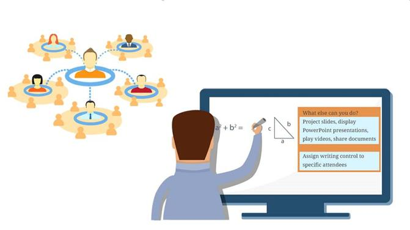
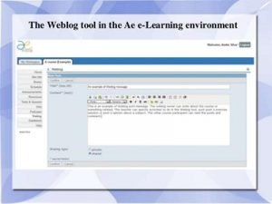
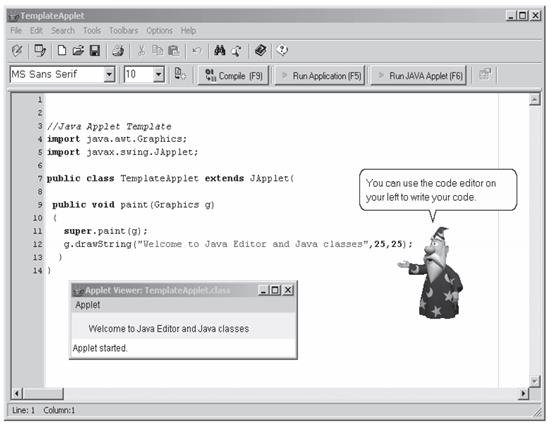
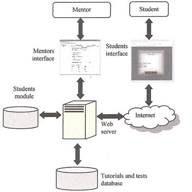
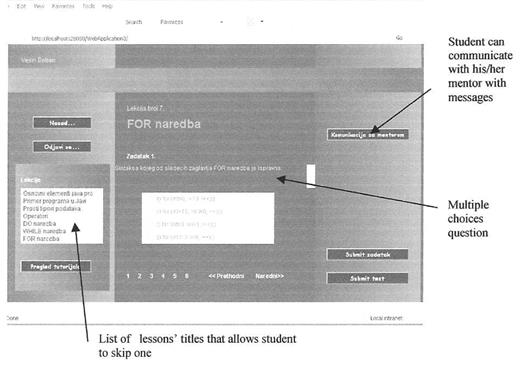
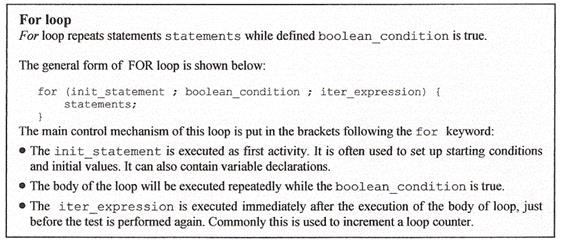
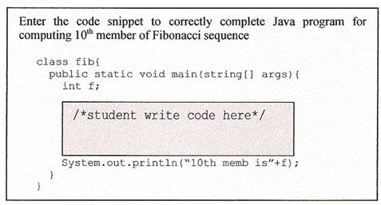
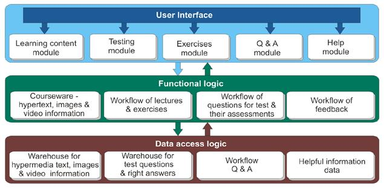
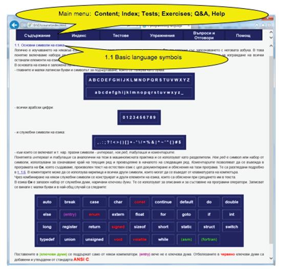
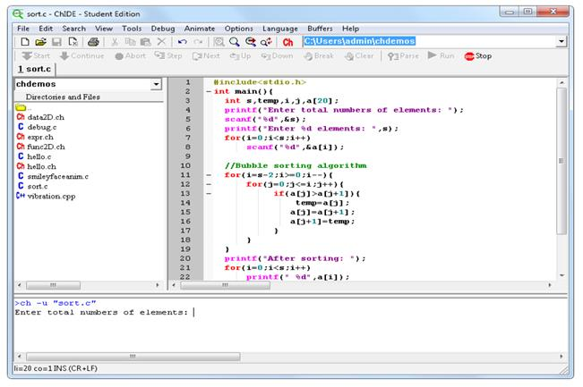

Data publicării: 08.10.2018
Autor articol: Adrian Iftene
Introducere
Scopul acestui articol a fost de a analiza platformele existente de e-Learning folosite în informatică. De regulă, platformele de e-Learning oferă acces profesorilor și studenților la o platformă care poate gestiona cursurile și temele studenților (sub formă de fișiere pdf sau doc sau txt sau sub formă de conținut multimedia), poate crea spații unde se pot desfășura orele punându-i în contact pe profesori cu studenții lor, permite interacțiunea dintre profesori și studenți fie prin e-mail, fie prin chat, permite evaluări pe bază de teste grilă, oferă grafice cu evoluția studenților, etc. În informatică, în momentul în care studenții învață o nouă tehnică de programare sau un limbaj nou, este nevoie ca aceștia să scrie programe pe care să le poată evalua fie singuri, fie sub supravegherea profesorului. Din acest motiv, platformele care pun la un loc elementele unui sistem de e-Learning, cu elementele specifice unui mediu de dezvoltare și de programare sunt foarte apreciate de profesorii și de studenții de la facultățile cu profil informatic. În continuare, vom vedea câteva platforme de eLearning concepute special pentru studenții informaticieni.
eLearning
E-learning-ul ca abordare nouă a învățării este centrat pe cursant, ceea ce înseamnă că studentul conduce el însuși procesul de învățare și decide când și unde și cum ar trebui să se întâmple învățarea, ceea ce înseamnă că pot planifica cum doresc învățarea pentru ei înșiși. Profesorul nu depinde de ceilalți cursanți sau de timpul de formare sau curs. Profesorul poate participa activ, poate comunica și colabora cu ceilalți cursanți sau cu formatori, poate interacționa cu mediul de învățare și cu conținutul, testa și își poate construi soluțiile, descoperă și repetă anumite părți ale procesului cu fiecare cursant în parte, ceea ce face ca învățarea să fie mai confidențială și mai eficientă. În educația actuală metodele digitale transformă metodele clasice și le ajută să fie mai eficiente (vezi Figura 1 de mai jos).
În locul utilizării profesioniștilor care transmit cunoștințe studenților ca în strategiile tradiționale de învățare, în e-learning, noile tehnologii și instrumente sunt oferite cursanților pentru a-și perfecționa procesul de învățare și pentru a-și face propriul scenariu de învățare (Finn, 2006).
De asemenea, cadrul tradițional de învățare se schimbă de la o clasă fizică la o clasă virtuală online sau într-un mediu virtual de e-learning, de la o întâlnire față în față, la o conferință video online (vezi Figura 2 de mai jos). Modul în care conținutul este furnizat în învățarea tradițională a clasei este schimbat de la prezentarea verbală la cea non-verbală, utilizând tehnologii de lucru în rețea, tehnologii bazate pe Internet și web, prezentări multimedia, audio și text care pot fi ușor revizuite.

Tehnologiile tradiționale de învățare sunt înlocuite cu noile tehnologii de învățare (Finn, 2006):
- Weblog (blog) – publicații de articole pe web;
- Moblog (mobile și weblog) – conținut postat pe Internet de pe dispozitive mobile sau portabile, plus accesul instantaneu la informații în timp real;
- Aplicații Wiki-Web – permit utilizatorilor să adauge și să editeze conținut (ca pe un forum pe internet);
- VLog-Weblog – utilizează formatul video ca format principal de prezentare, iar distribuția conținutului video și audio se face cu ajutorul Internetului;
- Tehnologii Pod Cast – permit distribuirea automată a programelor audio și video pe internet;
- RSS (Real Simple Syndication) – oferă o modalitate de urmărire a blogurilor.

Figura 3: Exemple pentru Moblog (în stânga) și Weblog (în dreapta)
Limbajul Java
În articolul (Fetaji et al., 2007), autorii au investigat care sunt posibilitățile de îmbunătățire și de creștere a calității tehnologiei de e-learning, de accesibilitate la conținutul de învățare, de comunicare și de învățare prin crearea unui instrument interactiv virtual de învățare a limbajului de programare Java. Aceștia au creat un mediu interactiv Java, care oferă un editor de programe cu opțiuni de compilare și rulare a aplicației Java (vezi Figura 4 de mai jos). Acest instrument a fost folosit cu succes la cursul de programare orientată pe obiecte în Java și evaluarea a fost una reușită.
Sistemul dezvoltat în (Fetaji et al., 2007) are mai multe componente integrate într-o singură interfață grafică:
- Un editor Java, care permite editarea fișierelor și manipularea lor,
- Unelte pentru compilarea și rularea aplicațiilor Java,
- Conținut pentru a ajuta studentul.

Proiectul a fost conceput cu scopul de a consolida cunoștințele studenților și celor care doresc să învețe doar pe baza scrierii de programe pentru a crea aplicații și applet-uri Java. De asemenea, este foarte bun pentru începători, cărora le face o bună introducere în principiile de programare structurală și le va crea contextul potrivit pentru a folosi stilurile corecte de scriere a codului în Java.
Evaluarea realizată de autori a demonstrat utilitatea platformei de eLearning. De asemenea, testarea realizată cu ajutorul utilizatorilor reali atât pe perioada dezvoltării prototipului, cât și pe perioada construirii aplicației finale a făcut ca problemele legate de uzabilitatea produsului final să fie rezolvate pe parcursul implementării proiectului.
În articolul (Vesin et al., 2009), autorii prezintă sistemul de învățare Mag, care are trei facilități pentru studenți: activități de tutoriat, întrebări grilă cu feedback și programare on-line. De asemenea, Mag susține învățarea pe bază de exemple și bazată pe exerciții de programare. Arhitectura sistemului este prezentată în Figura 5, iar interfața sistemului este prezentată în Figura 6.
Proiectarea preliminară a sistemului Mag a fost bazată pe câteva cerințe de bază:
- interfețe utilizator separate pentru studenți și mentori,
- tutoriale ușor accesibile pentru studenți,
- diverse exemple pentru fiecare lecție (în cadrul modulului de învățare),
- teste adaptabile pentru fiecare lecție, care pot fi ajustate în funcție de nivelul studentului,
- programarea online, compilarea și rularea programelor,
- statistici și rapoarte individuale pentru studenți,
- funcționalități pentru o monitorizare ușoară a muncii studentului,
- funcționalități pentru adăugarea de lecții, exemple și teste,
- posibilități de comunicare între studenți și mentori.

Sistemul este destinat să fie utilizat de două tipuri de utilizatori (există două roluri principale):
- studenții (aceștia urmează cursul de programare Java și vor folosi sistemul pentru a obține anumite cunoștințe și competențe),
- mentorii (rolul lor este acela de a administra baza de date cu lecțiile și cu studenții, de a urmări progresul elevilor și de a-i ajuta în îndeplinirea sarcinilor lor).

Cursurile sunt bazate pe exemple de cod, care sunt explicate (vezi Figura 7), iar testele de evaluare sunt pline de cerințe practice, în care se cere scrierea codului lipsă (vezi Figura 8).


Prin urmare Mag este un sistem care permite învățarea la distanță a limbajului Java, oferind exemple care să ajute studentul să înțeleagă noțiunile pe care le învață și teste care să evalueze progresul acestuia. Unul din avantajele oferite de Mag constă în faptul că studenții nu trebuie să-și instaleze aplicații pentru a scrie/compila/rula programe Java, acestea fiind oferite de platforma de învățare.
Limbajul C
În (Mustakerov și Borissova, 2017) autorii prezintă o platformă de e-Learning concepută special pentru cei ce urmează să învețe limbajul C. Sistemul are cinci module de bază: pentru conținutul cursurilor, pentru testare, pentru exerciții, pentru întrebări și răspunsuri și pentru ajutor (vezi Figura 9 de mai jos).

Modulul pentru conținut de învățare este compus din diferite informații multimedia (text, hypertext, imagini și video) pentru fiecare curs în parte (vezi Figura 10 de mai jos).

Modulul de exerciții conține instrucțiuni pentru exerciții de programare corespunzătoare conținutului de învățare al cursurilor. În acest modul, elevii pot scrie și testa diverse programe, deoarece abilitățile de programare nu pot fi obținute fără practică de programare. Acest lucru permite elevilor să stabilească break-point-uri, să ruleze un program pas cu pas, să vadă și să modifice valorile variabilelor din stivă în timpul execuției, etc. (vezi Figura 11 de mai jos).

Stările de înțelegere ale cursanților pot fi măsurate prin teste în timpul învățării prin intermediul modulului de testare. Pentru a estima cunoștințele studenților, sistemul de e-Learning integrează auto-testare combinată cu o evaluare automată.
Modulul întrebări și răspunsuri oferă întrebări frecvente și răspunsuri la aceste întrebări.
Modulul ajutor conține informații despre organizarea cursului și regulile de utilizare a acestuia. Structurarea sistemului de învățare în module permite întreținerea cu ușurință a managementului cursurilor și a viitoarelor actualizări.
Interfața cu utilizatorul permite interacțiunea cu cele cinci module prezentate mai sus. Sistemul de e-learning propus este independent de platformă, deoarece este disponibil pe Internet prin intermediul browser-elor. O caracteristică distinctivă a sistemului de e-Learning prezentat este posibilitatea de a fi utilizat independent pentru studiul cursului de programare în limbajul C sau pentru a fi încorporat într-un sistem de e-Learning existent. Astfel, Internetul permite studenților să dobândească cunoștințe și abilități în programarea C într-un mod convenabil, din punct de vedere al timpului și locului, prin utilizarea funcționalității sistemului de e-Learning descris.Testarea preliminară a sistemului cu utilizatori reali (atât profesori, cât și studenți) a arătat că acesta este acceptat foarte bine de aceștia.
Concluzii
Sistemele de e-Learning actuale sunt din ce în ce mai folosite atât de elevi, cât și de profesori, din cauza multiplelor facilități oferite de acestea. Pe lângă faptul că acestea permit accesul la unitățile de învățare oricând și de oriunde ai acces la Internet, vin și cu exerciții care pemit învățarea prin exemple și prin teste explicate în detaliu.
În domeniul informaticii, e nevoie ca aceste platforme să ofere editoare de programe integrate cu facilități pentru compilarea și rularea acestora. Doar exersând și scriind programe poți învăța un limbaj de programare (precum Java sau C) sau poți învăța o tehnică de programare. Platformele prezentate în acest articol au fost acceptate cu succes de către cei care le-au testat, iar evaluarea studenților care le-au folosit au demonstrat utilitatea lor.
Referințe bibliografice
- Fetaji, M., Fetaji, B., Ebibi, M. (2007) Modeling Java Interactive E-Learning Virtual Environment. In Proceedings of the 5th International 70 Conference on Informatics and Information Technology, pp. 70-79.
- Finn, A. (2006) Trends: Out with the Old, In with the New?
- Mustakerov, I., Borissova, D. (2017) A framework for development of e-learning system for computer programming: Application in the C programming language. Je-LKS, Journal of e-Learning and Knowledge Society, The Italian e-Learning Association Journal, vol. 13, no. 2, pp. 89-101, ISSN: 1826-6223, e-ISSN:1971-8829, DOI: 10.20368/1971-8829/1299
- Vesin, B., Ivanovic, M., Budimac, Z. (2009) Learning Management System for Programming in Java. Annales Univ. Sci. Budapest., Sect. Comp. 31 (2009) pp. 75-92.